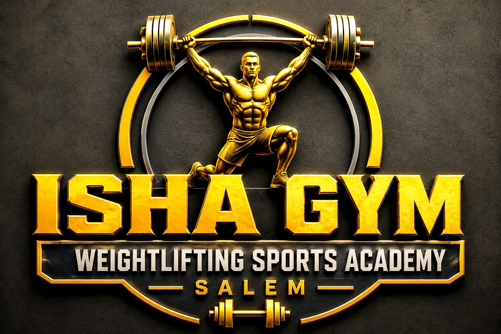
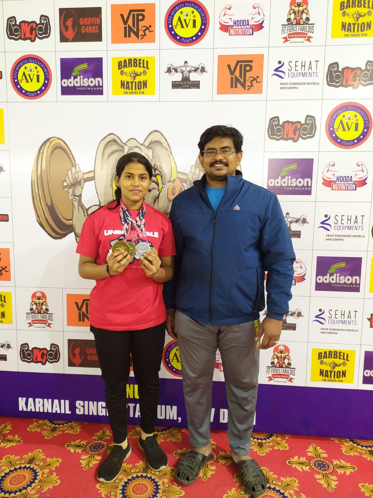
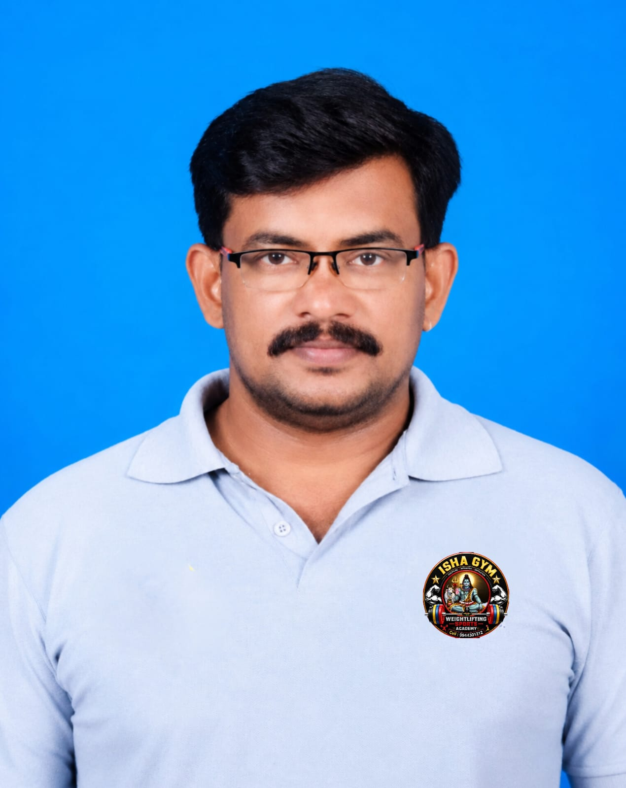

ISHA GYM
WEIGHTLIFTING SPORTS ACADEMY
SALEM

WEIGHTLIFTING SPORTS ACADEMY
SALEM
Isha Gym Weightlifting Sports Academy provides professional Olympic Weightlifting coaching for boys and girls. We offer strength training, fitness programs, athlete development, and competition coaching for District, State, National, Khelo India, and School Games.
Our training is guided by experienced coaches in a disciplined, supportive, and performance-focused environment—helping athletes build strength, confidence, and the mindset to compete at higher levels.

Isha Gym Weightlifting Sports Academy is dedicated to developing strong, disciplined, and confident athletes through professional Olympic Weightlifting and strength training. We provide quality coaching for boys and girls, focusing on strength development, fitness, technique, athlete development, and competition preparation. Our athletes are trained to compete at District, State, National, Khelo India, and School Games levels. With experienced coaches and a disciplined, supportive training environment, we help every athlete improve their performance and work towards becoming a champion.

Isha Weightlifting Training Centre has been providing dedicated training and opportunities for young athletes, helping them achieve success at District, State, National and International levels.
Our athletes have achieved remarkable success in School-level Weightlifting Competitions at the national level, including SGFI competitions.
Our athletes have secured District, State and National-level achievements in competitions conducted under the Tamil Nadu Chief Minister's Trophy and SDAT.
We have achieved outstanding results in Tamil Nadu State-level Weightlifting Championships.
For several consecutive years, our athletes have continued to represent and achieve success for Salem District in weightlifting.
Our athletes have also achieved success in National-level Weightlifting Competitions.
We provide professional weightlifting and strength training from the school level to senior athlete level, helping young talents build a strong competitive career.
From young beginners to competitive athletes, we focus on strength, technique, discipline and consistent performance. Our goal is to identify talent, develop athletes and guide them towards higher levels of competition.